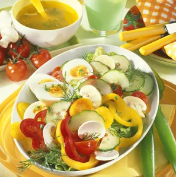

Colorful Summer Salad

Description
A German salad dish known as Bunter Sommersalat (colorful summer salad). A healthy and delicious salad with a variety of textures and aromas. This will be a suitable dish to serve our potato pockets with.
Ingredients
- 4 eggs
- 2 bell peppers (different colors)
- 1 seedless cucumber
- 3-1/2 oz button mushrooms (100g)
- 1/3 lb cherry tomatoes
- 1 head lettuce
- 1 bunch fresh chives
- 2 sprigs fresh dill
- 6 tbsp red wine vinegar
- 6 tbsp cold-pressed rapeseed oil (canola oil)
- salt and pepper
- sugar
Steps
Credit: